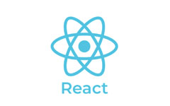
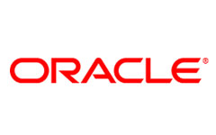
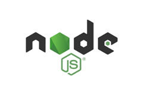
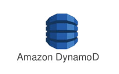
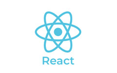
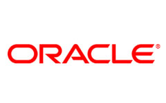
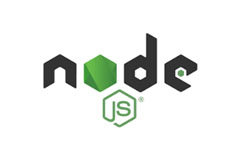
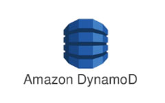

Empowering businesses like no other
We are grateful to be able to share our success stories.
"Enabling digital transformation strategies"
i-Tuple has been an excellent partner for us over the past 18 months,
as we are engaged by clients to assist them in developing their RPA,
automation, data science, and digital transformation strategies.
i-Tuple’s experienced senior leaders and deep domain expertise has
been critical in exceeding our client's expectations. Finally, their
ability to innovate with us in designing unique solutions to address
our client needs has been a differentiator and allowed us to scale our
delivery to match our client commitments.
Rohail A. Khan
President(DSE) at IRPA / AI
"Awesome design."
No industry today is left untouched by the benefits of technology and
the ease it brings with it. iTuple is our support partner for our
organisation's digital upgradation. Within first year of the process
itself, they have helped us automate various processes including
medical record reviews, which help us in better assessment and
preparation for the legal suits. The best part of working with iTuple
is their structured approach and response time from
identifying/reporting of a bug to resolution. Incorporating technology
in our work has helped save on precious man hours, and invest then
judicially in more prominent areas.
CTO Of a legal firm
Evolving to a better solution
As a Startup begins to scale and cater to larger volumes, the
technology built in the initial days requires complete overhaul and
re-architecting. In 2018, with volumes increasing every day and
transactions hitting 1 million+ per month, a more robust, and scalable
solution was the need of the hour. We engaged iTuple and helped us
move away from our monolith application to a microservice
architecture, and build a faster, scalable, and more reliable
platform. Not only this, they also helped us move our non-core
business flow to an event-based architecture. Overall, today our
systems are scalable and able to cater to 10x the volume without any
hiccup.
Nitin Gupta
Head of product and engineering


 






